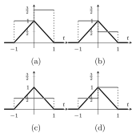
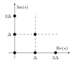

Modality A: Final
The final of Modality A has seven problems taken unchanged from the 50 problems of this collection. The sample examination shows the format.
Sample examination
Collection
This collection contains the questions from which the Modality A final exam is drawn. Each question has exactly one correct answer among the four options (a)–(d), and requires a short mathematical derivation.
We use the following conventions. The function \sinc(x) is \tfrac{\sin(\pi x)}{\pi x}. A probability is denoted by \Pr(\cdot) and an expectation by \EE(\cdot). A channel with input x and output y has law W(y|x). In the discrete-time model of a complex AWGN channel of noise spectral density \No, each channel use adds a circularly symmetric complex Gaussian noise sample of variance \sigma^2=\No, that is, \No/2 per real component, and a passband transmission of bandwidth W and duration T has WT channel uses. The bandwidth of a baseband waveform is the extent of the positive frequencies where its Fourier transform is nonzero, and a baseband waveform of bandwidth W carries at most 2W symbols per second without inter-symbol interference. The function \mathrm{rect}(f) equals 1 for |f|\leq\frac12 and 0 otherwise.
Consider the waveforms \begin{gather*} \phi_1(t)=\begin{cases}1 & 0\leq t\leq 1\\ 0 & \text{otherwise}\end{cases}\\ \phi_2(t)=\begin{cases}\alpha+\beta t & 0\leq t\leq 1\\ 0 & \text{otherwise},\end{cases} \end{gather*} with \alpha,\beta\in\RR. What is the value of |\alpha| for which the set \{\phi_1,\phi_2\} is orthonormal?
1
0
2\sqrt3
\sqrt3
Show solution
Correct answer: (d).
A set of waveforms is orthonormal when every pair satisfies \langle\phi_i,\phi_k\rangle=\int_{-\infty}^{\infty}\phi_i(t)\phi_k^*(t)\drm t=\delta_{ik}, so we need \phi_1 and \phi_2 to have unit energy and to be orthogonal. The first waveform has unit energy, since \int_0^1\drm t=1, whatever the values of \alpha and \beta. Orthogonality requires that \langle\phi_1,\phi_2\rangle=\int_0^1(\alpha+\beta t)\drm t=\alpha+\frac{\beta}{2} vanishes, which fixes \beta=-2\alpha. Unit energy of the second waveform requires that \int_0^1(\alpha+\beta t)^2\drm t=\alpha^2+\alpha\beta+\frac{\beta^2}{3} equals 1. Substituting \beta=-2\alpha in this expression, the energy becomes \alpha^2-2\alpha^2+\frac{4}{3}\alpha^2=\frac{\alpha^2}{3}, and setting it to 1 gives \alpha=\pm\sqrt3, with \beta=\mp2\sqrt3. Both signs give a valid orthonormal set, and in both cases |\alpha|=\sqrt3.
Let \phi(t)=1 for 0\leq t\leq 2 and \phi(t)=0 otherwise. Which of the following sets of waveforms is orthonormal?
\bigl\{\phi(-2t),\,\phi(2t),\,\phi(2(t-1))\bigr\}
\bigl\{\phi(-t),\,\phi(t),\,\phi(t-1)\bigr\}
\bigl\{\phi(t),\,\phi(2t),\,\phi(3t)\bigr\}
\bigl\{\phi(-2t),\,\phi(2t),\,\phi(2t-1)\bigr\}
Show solution
Correct answer: (a).
Both conditions, unit energy and orthogonality, can be checked directly on the supports of the waveforms. The waveform \phi(t) has energy \int_0^2\drm t=2, and the change of variable u=at shows that its scaled version \phi(at) has energy \int_{-\infty}^{\infty}|\phi(at)|^2\drm t=\frac{1}{|a|}\int_{-\infty}^{\infty}|\phi(u)|^2\drm u=\frac{2}{|a|}, which equals 1 only when |a|=2. This already discards options (b) and (c), which contain waveforms with another scaling. Since all the waveforms are rectangular, two of them are orthogonal if and only if their supports overlap at most at one point. The supports are [-1,0] for \phi(-2t), [0,1] for \phi(2t) and [1,2] for \phi(2(t-1)), which share only their endpoints, so the set in option (a) is orthonormal. In option (d), the last waveform is \phi(2t-1)=\phi(2(t-\frac12)), with support [\frac12,\frac32], which overlaps with the support of \phi(2t). The two waveforms are therefore not orthogonal and the set is not orthonormal.
Consider two waveforms \phi_1(t) and \phi_2(t) and a complex number \alpha. Which of the following statements is true?
If \{\phi_1,\phi_2\} is orthonormal, then \langle\phi_1,\phi_1\rangle=\alpha for every \alpha with |\alpha|=1.
If \phi_1 and \phi_2 are linearly independent, then \langle\phi_1,\phi_2\rangle=0.
If \phi_1 has unit energy and \phi_2(t)=\alpha\phi_1(t), then \langle\phi_1,\phi_2\rangle=\alpha^*.
If \phi_1 and \phi_2 are orthogonal, then \phi_1(t)\phi_2(t)=0 for all t.
Show solution
Correct answer: (c).
Option (c) is true. If \phi_2(t)=\alpha\phi_1(t), then the inner product is \begin{align*} \langle\phi_1,\phi_2\rangle&=\int_{-\infty}^{\infty}\phi_1(t)\bigl(\alpha\phi_1(t)\bigr)^*\drm t\\ &=\alpha^*\int_{-\infty}^{\infty}|\phi_1(t)|^2\drm t=\alpha^*, \end{align*} where the last equality uses that \phi_1 has unit energy. Note that the conjugate falls on the second waveform, and hence on \alpha.
Option (a) is false because \langle\phi_1,\phi_1\rangle is the energy of \phi_1, a nonnegative real number, and for an orthonormal set this energy is exactly 1. The equality fails for any other number of unit modulus, for instance \alpha=j. Option (b) is false because linear independence does not imply orthogonality: two rectangular waveforms with supports (0,1) and (0,2) are linearly independent, yet their inner product equals 1. Option (d) is false because orthogonality does not require disjoint supports: the rectangular waveform on [0,1] and the waveform that equals 1 on [0,\frac12) and -1 on [\frac12,1] have zero inner product, although their product is nonzero at every point of [0,1].
Consider the waveforms \phi_1(t)=\sinc(t) and \phi_2(t)=\sqrt2\,\sinc(2t). Then,
\{\phi_1,\phi_2\} is orthonormal.
\phi_1 and \phi_2 are orthogonal.
\phi_1 and \phi_2 are linearly dependent.
None of the above.
Show solution
Correct answer: (d).
The inner product is easier to compute in the frequency domain, since by Parseval’s identity \langle\phi_1,\phi_2\rangle=\langle\hat\phi_1,\hat\phi_2\rangle. The waveform B\sinc(Bt) has a rectangular Fourier transform, equal to 1 on [-\frac B2,\frac B2] and zero elsewhere, so \hat\phi_1(f) equals 1 on [-\frac12,\frac12] and \hat\phi_2(f) equals \frac{1}{\sqrt2} on [-1,1]. The two transforms overlap on the support of \hat\phi_1, and \langle\hat\phi_1,\hat\phi_2\rangle=\int_{-1/2}^{1/2}\frac{1}{\sqrt2}\drm f=\frac{1}{\sqrt2}, which is not zero: the waveforms are not orthogonal, and hence not orthonormal either, even though both have unit energy, 1 and 2\cdot\frac12 respectively. They are not linearly dependent either. If a_1\phi_1(t)+a_2\phi_2(t)=0 for all t, the same relation holds between the transforms, a_1\hat\phi_1(f)+a_2\hat\phi_2(f)=0 for all f. On the band \frac12<|f|\leq1 only \hat\phi_2 is nonzero, which forces a_2=0, and then a_1=0 as well. Hence none of the three statements holds.
Consider the orthonormal basis \{\phi_i(t)\}_{i\in\mathbb Z} with \phi_i(t)=\begin{cases}e^{j2\pi it} & 0\leq t\leq1\\ 0 & \text{otherwise},\end{cases} and the signal x(t)=1 for 0\leq t\leq\frac12 and x(t)=0 otherwise. What is the value of the coefficient x_{-1}=\langle x,\phi_{-1}\rangle in the projection of x(t) onto this basis?
\frac{1}{j2\pi}
0
\frac{1}{j\pi}
\frac{j}{\pi}
Show solution
Correct answer: (d).
The coefficient is the inner product of the signal with the basis waveform \phi_{-1}(t)=e^{-j2\pi t} on [0,1], whose conjugate is e^{j2\pi t}. Since x(t) vanishes outside [0,\frac12], the integral reduces to that interval, and \begin{align*} x_{-1}&=\int_{-\infty}^{\infty}x(t)\phi_{-1}^*(t)\drm t =\int_0^{1/2}e^{j2\pi t}\drm t\\ &=\left[\frac{e^{j2\pi t}}{j2\pi}\right]_0^{1/2} =\frac{e^{j\pi}-1}{j2\pi}. \end{align*} Using e^{j\pi}=-1, the numerator equals -2 and the coefficient becomes x_{-1}=-\frac{1}{j\pi}. Multiplying numerator and denominator by j, and since j^2=-1, we obtain x_{-1}=\frac{j}{\pi}.
Consider the waveforms \begin{gather*} \phi_1(t)=\begin{cases}1 & -1\leq t<1\\ 0 & \text{otherwise}\end{cases}\\ \phi_2(t)=\begin{cases}-1 & 0\leq t<1\\ 0 & \text{otherwise},\end{cases} \end{gather*} and the triangular signal x(t)=1-|t| for |t|\leq1 and x(t)=0 otherwise, shown in black in the plots below. Which plot shows, in gray, the signal \bar x(t)=x_1\phi_1(t)+x_2\phi_2(t) built with the coefficients x_i=\langle x,\phi_i\rangle?

Show solution
Correct answer: (a).
The coefficients are the inner products of the real signal with each waveform. The first one is the area under the triangle, x_1=\int_{-\infty}^{\infty}x(t)\phi_1(t)\drm t=\int_{-1}^{1}(1-|t|)\drm t=1, and the second one only sees the right half of the triangle, with a change of sign, x_2=\int_{-\infty}^{\infty}x(t)\phi_2(t)\drm t=-\int_{0}^{1}(1-t)\drm t=-\frac12. The represented signal is therefore \bar x(t)=\phi_1(t)-\frac12\phi_2(t), which equals 1 on [-1,0), where only \phi_1 is nonzero, and 1-\frac12\cdot(-1)=\frac32 on [0,1), where both waveforms contribute. This is plot (a). Observe that \{\phi_1,\phi_2\} is not an orthonormal set, since \phi_1 has energy 2 and \langle\phi_1,\phi_2\rangle=-1, so \bar x(t) is not the orthogonal projection of x(t) onto the space they span. This is why \bar x(t) can exceed the signal on [0,1).
The signal x(t)=\sinc(t) is represented using the sampling waveforms \phi_i(t), i\in\mathbb Z, with Fourier transforms \hat\phi_i(f)=\begin{cases}\frac{1}{\sqrt2}\,e^{-j\pi if} & -1\leq f\leq1\\ 0 & \text{otherwise},\end{cases} as \bar x(t)=\sum_{i=-m}^{m}x_i\phi_i(t), where x_i=\langle x,\phi_i\rangle. For m=1, the Fourier transform of \bar x(t) is, for -1\leq f\leq1,
\frac12+\frac{1}{\pi}\cos(\pi f)
\frac12+\frac{2}{\pi}\cos(2\pi f)
\frac12+\frac{2}{\pi}\cos(\pi f)
\frac{1}{\sqrt2}+\frac{\sqrt2}{\pi}\cos(\pi f)
Show solution
Correct answer: (c).
The waveforms \phi_i(t) are the sampling waveforms for signals band-limited to W=1: in the time domain, \phi_i(t)=\sqrt2\,\sinc\bigl(2(t-\frac i2)\bigr), shifted copies of one unit-energy sinc at the sampling instants \frac i2. The coefficients can be computed as inner products in the frequency domain, \begin{align*} x_i&=\int_{-\infty}^{\infty}\hat x(f)\hat\phi_i^*(f)\drm f\\ &=\frac{1}{\sqrt2}\int_{-1}^{1}\hat x(f)e^{j2\pi f\frac i2}\drm f =\frac{1}{\sqrt2}\,x\Bigl(\frac i2\Bigr), \end{align*} where the last equality is the inverse Fourier transform evaluated at t=\frac i2, valid because \hat x(f)=\mathrm{rect}(f) vanishes outside [-1,1]. Hence the coefficients are samples of x(t) at the instants \frac i2, scaled by \frac{1}{\sqrt2}. For m=1 we need three of them: x_0=\frac{1}{\sqrt2}\sinc(0)=\frac{1}{\sqrt2} and, since \sinc(\pm\frac12)=\frac{\sin(\pi/2)}{\pi/2}=\frac2\pi, x_{-1}=x_1=\frac{1}{\sqrt2}\cdot\frac2\pi=\frac{\sqrt2}{\pi}. By linearity, the Fourier transform of \bar x(t) is x_{-1}\hat\phi_{-1}(f)+x_0\hat\phi_0(f)+x_1\hat\phi_1(f), which for -1\leq f\leq1 equals \frac{1}{\pi}e^{j\pi f}+\frac12+\frac{1}{\pi}e^{-j\pi f} =\frac12+\frac{2}{\pi}\cos(\pi f), and is zero outside that interval. Observe that the three-term approximation already resembles \hat x(f)=\mathrm{rect}(f): it is close to 1 around f=0 and small near |f|=1.
What is the output of the following MATLAB code?
a = 1 + (rand < 0.5);
phi1 = @(t) sinc(t);
phi2 = @(t) sinc(a*t);
f = @(t) phi1(t).*conj(phi2(t));
integral(f, -inf, inf)A zero-mean Gaussian random variable with variance \frac12.
A discrete random variable taking the values \frac12 and 1 with equal probability.
A uniform random variable in the interval (1,2).
A discrete random variable taking the values 0 and 1 with equal probability.
Show solution
Correct answer: (b).
The first line draws a uniform number in (0,1) and compares it with \frac12, so
aequals 2 with probability \frac12 and 1 otherwise. The last line computes the inner product \begin{align*} \langle\phi_1,\phi_2\rangle&=\int_{-\infty}^{\infty}\sinc(t)\sinc(at)\drm t\\ &=\int_{-\infty}^{\infty}\hat\phi_1(f)\hat\phi_2^*(f)\drm f, \end{align*} where Parseval’s identity moves the calculation to the frequency domain. There, \hat\phi_1(f)=\mathrm{rect}(f) is a rectangle of height 1 on [-\frac12,\frac12], and \hat\phi_2(f)=\frac1a\mathrm{rect}(f/a) is a rectangle of height \frac1a on [-\frac a2,\frac a2]. Whenais 1 the two rectangles coincide and the integral is the energy of \sinc(t), equal to 1. Whenais 2 the narrower rectangle selects [-\frac12,\frac12], where the product equals \frac12, and the integral is \frac12. The output is therefore a discrete random variable taking the values 1 and \frac12 with equal probability.A waveform \phi(t) with Fourier transform \hat\phi(f)=\begin{cases}\sqrt3 & -\frac16\leq f<\frac16\\ 0 & \text{otherwise}\end{cases} is used to transmit information as \sum_{i=-\infty}^{\infty}X_i\phi(t-iT), where the X_i are symbols from an 8-PSK constellation and T is the symbol period. What is the maximum rate that avoids inter-symbol interference?
\frac13 bit per second.
1 bit per second.
3 bits per second.
6 bits per second.
Show solution
Correct answer: (b).
The transform is nonzero only for |f|<\frac16, so the bandwidth of \phi(t), defined as the extent of its positive frequencies, is W=\frac16 Hz. The amplitude \sqrt3 fixes the energy of the waveform, \int_{-1/6}^{1/6}3\drm f=1, but plays no role in the rate. By the Nyquist criterion, shifted copies of a waveform of bandwidth W can be orthogonal at a symbol rate of at most 2W, so the maximum symbol rate without inter-symbol interference is R_{\mathrm s}=2W=\frac13\ \text{symbols per second}. Each 8-PSK symbol carries \log_28=3 bits, since three bits are mapped one-to-one onto the eight symbols, and the maximum bit rate is R_{\mathrm b}=3R_{\mathrm s}=1 bit per second.
A waveform \phi(t) with similarity function R_{\phi\phi}(\tau)=\sinc(2\tau) is used to transmit information as \sum_{i=-\infty}^{\infty}X_i\phi(t-iT), where the X_i are symbols from an M-QAM constellation and T is the symbol period. The maximum rate without inter-symbol interference is
2\log_2M bits per second.
\frac{\log_2M}{4} bits per second.
\frac{\log_2M}{2} bits per second.
\log_2M bits per second.
Show solution
Correct answer: (a).
The shifted waveforms \phi(t-iT) are free of inter-symbol interference when they are orthogonal, that is, when the similarity function R_{\phi\phi}(\tau)=\int_{-\infty}^{\infty}\phi(t)\phi^*(t-\tau)\drm t vanishes at every nonzero multiple of the symbol period, R_{\phi\phi}(kT)=0 for k=\pm1,\pm2,\dots Since \sinc(x)=\frac{\sin(\pi x)}{\pi x} vanishes at every nonzero integer x, the function \sinc(2\tau) vanishes at \tau=\pm\frac12,\pm1,\pm\frac32,\dots The smallest admissible symbol period is the first zero, T=\frac12, and every multiple of it is then a zero as well. The symbol rate is R_{\mathrm s}=\frac1T=2 symbols per second, and since an M-QAM symbol carries \log_2M bits, the maximum bit rate is R_{\mathrm b}=2\log_2M bits per second. The same value follows from the frequency domain: \sinc(2\tau) is the inverse transform of a rectangle on [-1,1], so \phi(t) has bandwidth W=1 and R_{\mathrm s}=2W=2.
A communications system uses the frequencies in the interval (-50,50) MHz. Using a 256-QAM constellation, what is the maximum transmission rate, in Mbit/s, without inter-symbol interference?
12800
400
\frac{50}{256}
800
Show solution
Correct answer: (d).
The baseband waveform occupies |f|<50 MHz, so its bandwidth, the extent of the positive frequencies, is W=50 MHz. By the Nyquist criterion, the maximum symbol rate without inter-symbol interference is R_{\mathrm s}=2W=100 Msymbol/s. A constellation of 256=2^8 points carries \log_2256=8 bits per symbol, so the maximum bit rate is R_{\mathrm b}=8\cdot100=800 Mbit/s. The value 400 would result from forgetting the factor 2 of the Nyquist rate, and the value 12800 from that same mistake together with multiplying by 256 instead of by \log_2256.
Let \phi(t)=1 for 0\leq t<T and \phi(t)=0 otherwise. A digital data transmission system sends two independent bits D_1 and D_2, each with \Pr(D_i=0)=q, by constructing the waveform X(t)=e^{jD_1\frac\pi2}\,\phi(t)+e^{-jD_2\frac\pi2}\,\phi\Bigl(t-\frac T2\Bigr). Successive pairs of bits are sent with time-shifted copies of X(t). What is the maximum transmission rate, in bits per second, if the waveforms of different pairs must not overlap in time?
\frac1T
\frac{4}{3T}
\frac2T
\frac{3}{4T}
Show solution
Correct answer: (b).
The waveform is the sum of two rectangular pulses of duration T, the first one occupying [0,T) and the second one, delayed by \frac T2, occupying [\frac T2,\frac{3T}2). The complex exponentials only set the phase of each pulse, 1 or \pm j according to the bit, and do not change their supports, so the prior q plays no role either. The waveform therefore lasts \frac{3T}{2} seconds, and the next pair of bits can only be sent after that time if the waveforms must not overlap. Two bits every \frac{3T}{2} seconds give a maximum rate of R_{\mathrm b}=\frac{2}{3T/2}=\frac{4}{3T}\ \text{bits per second}.
What is the minimum value of
Tin the following transmission system to avoid inter-symbol interference? The number of symbolsnand the positive constantsbandcare given.
phi = @(t) sinc(b*t);
x = @(t) 0*t;
for i = 1:n
a = sign(randn);
x = @(t) x(t) + a*phi(t - i*c*T);
end\frac{1}{bc}
\frac{2}{b}
\frac{c}{b}
\frac{4}{b}
Show solution
Correct answer: (a).
The loop builds the transmitted signal x(t)=\sum_{i=1}^{n}a_i\,\phi(t-i\,cT), where each a_i=\pm1 is a binary symbol drawn with
sign(randn)and the pulses are spaced cT seconds apart, so the effective symbol period is cT. There is no inter-symbol interference when each pulse vanishes at the centers of all the other pulses, that is, when \phi(k\,cT)=0 for every integer k\neq0. Since \sinc(x) vanishes at every nonzero integer, \phi(t)=\sinc(bt) vanishes at t=\pm\frac1b,\pm\frac2b,\dots, and the condition holds whenever cT is a multiple of \frac1b. The minimum value is obtained for cT=\frac1b, that is, T=\frac{1}{bc}.What is the energy of the waveform x(t)=\begin{cases}e^{-t} & 0\leq t\leq1\\ 0 & \text{otherwise?}\end{cases}
1
\frac12
\frac{1-e^{-2}}{2}
1-\frac{1}{e^2}
Show solution
Correct answer: (c).
The energy of a waveform is the integral of its squared modulus, E=\int_{-\infty}^{\infty}|x(t)|^2\drm t. Since x(t) vanishes outside [0,1] and |e^{-t}|^2=e^{-2t}, the integral reduces to E=\int_0^1e^{-2t}\drm t=\left[-\frac{e^{-2t}}{2}\right]_0^1 =\frac12-\frac{e^{-2}}{2}=\frac{1-e^{-2}}{2}. The option 1-e^{-2} is the result of forgetting the factor \frac12 produced by the derivative of e^{-2t}.
What is the energy of the complex-valued signal x(t)=1+e^{jt} with support (0,\frac\pi2), that is, x(t)=0 outside that interval?
2
2+\pi
\pi
\frac{3\pi}{2}
Show solution
Correct answer: (b).
For a complex-valued signal the energy is E=\int_{-\infty}^{\infty}|x(t)|^2\drm t, with the squared modulus |x(t)|^2=x(t)x^*(t) and not the square of the signal. On the support, \begin{align*} |1+e^{jt}|^2&=(1+e^{jt})(1+e^{-jt})\\ &=2+e^{jt}+e^{-jt}=2+2\cos t, \end{align*} where the last step uses Euler’s formula e^{jt}+e^{-jt}=2\cos t. Integrating over (0,\frac\pi2), E=\int_0^{\pi/2}(2+2\cos t)\drm t=2\cdot\frac\pi2+2\bigl[\sin t\bigr]_0^{\pi/2}=\pi+2. Note that the two terms of x(t) have energies \frac\pi2 each, and their sum \pi is not the energy of the sum: the cross term 2\cos t contributes the extra 2, because the two terms are not orthogonal on (0,\frac\pi2).
For some a,b>0 with a\neq b, a modulation system maps two equiprobable independent bits (D_1,D_2) to the symbol X=\begin{cases} a+jb & (D_1,D_2)=(0,0)\\ a-jb & (D_1,D_2)=(0,1)\\ jb & (D_1,D_2)=(1,0)\\ a & (D_1,D_2)=(1,1). \end{cases} What is the average energy of the symbol X?
\frac{3a^2+3b^2}{4}
a^2+b^2
2(a^2+b^2)
ab
Show solution
Correct answer: (a).
The energy of a symbol is its squared modulus |X|^2, and the average energy is its expectation over the bits, \Es=\EE(|X|^2). The four symbols have energies |a+jb|^2=a^2+b^2, |a-jb|^2=a^2+b^2, |jb|^2=b^2 and |a|^2=a^2. Since the two bits are independent and equiprobable, each pair (D_1,D_2), and hence each symbol, has probability \frac14, so that \Es=\frac14\bigl(2(a^2+b^2)+b^2+a^2\bigr)=\frac{3a^2+3b^2}{4}. The value a^2+b^2 would be the energy if all four symbols were placed at the same distance from the origin, which is not the case here.
A data transmission system maps two equiprobable independent bits (D_1,D_2) to the signal X(t)=D_1\phi(t)+D_2\phi(t-1), where \phi(t)=1 for 0\leq t\leq2 and \phi(t)=0 otherwise. What is the average energy per bit of X(t)?
1
2
\frac52
\frac54
Show solution
Correct answer: (d).
The two pulses \phi(t) and \phi(t-1) occupy [0,2] and [1,3], so they overlap on [1,2] and are not orthogonal: the energy of the signal has to be computed for each of the four bit pairs. For (0,0) the signal is zero and its energy is 0. For (1,0) and (0,1) the signal is a single pulse of amplitude 1 and duration 2, with energy \int_0^2\drm t=2 and \int_1^3\drm t=2 respectively. For (1,1) the signal is 1 on [0,1) and on (2,3], and 2 on [1,2], with energy \int_0^1\drm t+\int_1^2 2^2\drm t+\int_2^3\drm t=1+4+1=6. Each pair has probability \frac14, so the average energy of the signal is \frac14(0+2+2+6)=\frac52, and since the signal carries two bits the average energy per bit is \Eb=\frac{5/2}{2}=\frac54.
What is the value of \Delta for which the average energy of the constellation with symbols s shown in the figure equals 1? The symbols are used equiprobably.

\frac{\sqrt3}{2}
\frac{1}{\sqrt2}
\frac{\sqrt3}{7}
1
Show solution
Correct answer: (b).
The average energy of an equiprobable constellation is the arithmetic mean of the squared moduli of its points, \Es=\EE(|s|^2). The six points are 0, \Delta, 2\Delta, j\Delta, 2j\Delta and \Delta+j\Delta, with squared moduli 0, \Delta^2, 4\Delta^2, \Delta^2, 4\Delta^2 and 2\Delta^2, whose sum is 12\Delta^2. Hence \Es=\frac{12\Delta^2}{6}=2\Delta^2, and setting 2\Delta^2=1 gives \Delta=\frac{1}{\sqrt2}. Note that the symbol at the origin costs no energy but still counts in the average.
Consider the signal x(t)=a_1\phi_1(t)+a_2\phi_2(t), where a_1 and a_2 are independent zero-mean unit-variance Gaussian random variables, and \phi_1(t) and \phi_2(t) are unit-energy waveforms. What is the average energy of x(t)?
It cannot be determined without knowing \langle\phi_1,\phi_2\rangle.
2
3
\sqrt2
Show solution
Correct answer: (b).
The average energy is the expectation of the energy over the random coefficients, E=\EE\bigl(\int_{-\infty}^{\infty}|x(t)|^2\drm t\bigr). Expanding the squared modulus of the sum, \begin{align*} |x(t)|^2&=|a_1|^2|\phi_1(t)|^2+|a_2|^2|\phi_2(t)|^2\\ &\quad+2\,\mathrm{Re}\bigl(a_1a_2^*\phi_1(t)\phi_2^*(t)\bigr), \end{align*} and integrating, the first two terms give |a_1|^2 and |a_2|^2, since both waveforms have unit energy, while the cross term gives 2\,\mathrm{Re}(a_1a_2^*\langle\phi_1,\phi_2\rangle). Taking expectations, \EE(|a_1|^2)=\EE(|a_2|^2)=1 by the unit variance, and \EE(a_1a_2^*)=\EE(a_1)\EE(a_2)^*=0 by independence and zero mean, so the cross term vanishes whatever the value of \langle\phi_1,\phi_2\rangle. The average energy is therefore E=1+1=2. The inner product of the waveforms would matter for the energy of each realization, but not for its average.
What is the most likely output of the following MATLAB code?
n = 100000;
aux = rand(1,n);
xx(aux > 0.25) = 1j;
xx(aux < 0.25) = 3;
1/n*sum(xx.*conj(xx))3
5
2
7
Show solution
Correct answer: (a).
The vector
auxcontains n independent uniform numbers in (0,1), and the two assignments build a vectorxxwhose entries are j when the uniform number exceeds \frac14 and 3 otherwise. Hencexxis a sequence of n independent symbols X_i from the constellation \{j,3\}, with \Pr(X=j)=\frac34 and \Pr(X=3)=\frac14. The productxx.*conj(xx)is the squared modulus of each entry, that is, the energy of each symbol, and the last line averages these energies. By the law of large numbers, for large n the average of independent realizations approaches the expectation, so \frac1n\sum_{i=1}^{n}|X_i|^2\approx\EE(|X|^2)=\frac34|j|^2+\frac14|3|^2=\frac34+\frac94=3. The output is the average symbol energy of the constellation, close to 3.What is the most likely output of the following MATLAB code?
p = 0.25;
n = 100000;
out = 0;
for i = 1:n
s = rand;
out = out + log2(p)*(s<p) ...
+ log2(1-p)*(s>p);
end
out/n2-\frac34\log_23
1+\frac34\log_23
-2+\frac34\log_23
-1-\frac34\log_23
Show solution
Correct answer: (c).
In each iteration the uniform number
sis below p with probability p=\frac14, in which case the code adds \log_2p, and above p with probability 1-p=\frac34, in which case it adds \log_2(1-p). The event \texttt{s}=p has probability zero. The last line divides the sum by n, so the output is the average of n independent realizations of a random variable Y that takes the values \log_2p and \log_2(1-p) with probabilities p and 1-p. By the law of large numbers the average approaches \begin{align*} \EE(Y)&=p\log_2p+(1-p)\log_2(1-p)\\ &=\frac14\log_2\frac14+\frac34\log_2\frac34. \end{align*} Since \log_2\frac14=-2 and \log_2\frac34=\log_23-2, this equals -\frac12+\frac34\log_23-\frac32=-2+\frac34\log_23\approx-0.81. The output is the negative of the binary entropy h_2(p) at p=\frac14: the code estimates -h_2(p) by Monte Carlo.What is the most likely output of the following MATLAB code?
n = 100000;
out = 0;
for i = 1:n
s = 3*rand - 1;
out = out + (s > 1)/n;
end
out\frac12
\frac16
\frac23
\frac13
Show solution
Correct answer: (d).
Since
randis uniform in (0,1), the variable S=3\,\texttt{rand}-1 is uniform in (-1,2), an interval of length 3, with density \frac13 on it. The comparison(s > 1)is 1 when the event \{S>1\} occurs and 0 otherwise, sooutaccumulates the fraction of iterations in which the event occurs. By the law of large numbers, the relative frequency of an event approaches its probability, \Pr(S>1)=\int_1^2\frac13\drm s=\frac13, the fraction of the interval (-1,2) that lies above 1. The output is therefore close to \frac13.What is the most likely output of the following MATLAB code?
n = 100000;
out = 0;
for i = 1:n
s = randn;
out = out + abs(s)/n;
end
out\sqrt\pi
\frac1\pi
\sqrt{\frac2\pi}
\frac12
Show solution
Correct answer: (c).
The function
randnreturns a standard Gaussian random variable S, with zero mean, unit variance and density f_S(s)=\frac{1}{\sqrt{2\pi}}e^{-s^2/2}. The loop averages n independent realizations of |S|, so by the law of large numbers the output approaches \EE(|S|). Since the integrand |s|f_S(s) is even, \EE(|S|)=\int_{-\infty}^{\infty}|s|f_S(s)\drm s =\frac{2}{\sqrt{2\pi}}\int_0^{\infty}s\,e^{-s^2/2}\drm s, and the substitution u=s^2/2, with \drm u=s\drm s, turns the last integral into \int_0^\infty e^{-u}\drm u=1. Hence \EE(|S|)=\frac{2}{\sqrt{2\pi}}=\sqrt{\frac2\pi}\approx0.80. Note that the mean of S itself is 0. The absolute value makes the average positive.What is the most likely output of the following MATLAB code?
n = 100000;
out = 0;
for i = 1:n
s = randn + 1j*randn;
out = out + abs(s)^2/n;
end
out1
2
\frac12
\frac\pi2
Show solution
Correct answer: (b).
Each call to
randnis an independent standard Gaussian variable, so S=S_{\mathrm r}+jS_{\mathrm i} is a complex Gaussian random variable whose real and imaginary parts are independent, with zero mean and unit variance each. The loop averages n independent realizations of |S|^2=S_{\mathrm r}^2+S_{\mathrm i}^2, and by the law of large numbers the output approaches \EE(|S|^2)=\EE(S_{\mathrm r}^2)+\EE(S_{\mathrm i}^2)=1+1=2, where each term is the variance of a zero-mean unit-variance variable. In communications terms,sis a sample of complex Gaussian noise of total variance \sigma^2=2, split equally between the two components. A noise sample of variance 1 would require(randn + 1j*randn)/sqrt(2).What is the differential entropy, in bits, of an exponential random variable with mean 2?
\log_2e
1+\log_2e
\frac12\log_2e
1-\log_2e
Show solution
Correct answer: (b).
The differential entropy of a random variable X with density f(x) is h(X)=-\int_{-\infty}^{\infty}f(x)\log_2f(x)\drm x. An exponential variable with mean 2 has density f(x)=\frac12e^{-x/2} for x\geq0, whose logarithm is \log_2f(x)=-1-\frac x2\log_2e. Therefore \begin{align*} h(X)&=\int_0^{\infty}f(x)\Bigl(1+\frac x2\log_2e\Bigr)\drm x\\ &=1+\frac{\log_2e}{2}\,\EE(X)=1+\log_2e, \end{align*} where the first term uses that the density integrates to 1 and the second one that \EE(X)=2. In general, an exponential variable with mean \mu has h(X)=\log_2(e\mu), which grows with the spread of the distribution, as for the uniform and Gaussian cases.
What is the differential entropy, in bits, of a real-valued random variable with density f(x)=e^{-2|x|}?
\log_2(2e)
2\log_2e
\log_2e
\log_2\frac e2
Show solution
Correct answer: (c).
The density is a two-sided exponential, symmetric around 0, and it integrates to 1 since 2\int_0^\infty e^{-2x}\drm x=1. Its logarithm is \log_2f(x)=-2|x|\log_2e, so that \begin{align*} h(X)&=-\int_{-\infty}^{\infty}f(x)\log_2f(x)\drm x\\ &=2\log_2e\int_{-\infty}^{\infty}|x|e^{-2|x|}\drm x=2\log_2e\cdot\EE(|X|). \end{align*} By symmetry, \EE(|X|)=2\int_0^\infty xe^{-2x}\drm x=2\cdot\frac14=\frac12, the mean of an exponential variable with parameter 2. Hence h(X)=\log_2e.
What is the differential entropy, in bits, of a complex random variable whose real and imaginary parts are independent zero-mean Gaussian random variables with variances 1 and 2, respectively?
\log_2(\sqrt2\,\pi e)
\log_2(\sqrt8\,\pi e)
\log_2(\sqrt3\,\pi e)
\log_2\bigl(\frac32\pi e\bigr)
Show solution
Correct answer: (b).
A complex random variable is a pair of real random variables, and when its real and imaginary parts are independent its differential entropy is the sum of their entropies, since the joint density factorizes and the logarithm of a product is the sum of the logarithms. A real Gaussian variable of variance \sigma^2 has differential entropy \frac12\log_2(2\pi e\sigma^2), so \begin{align*} h(Z)&=\frac12\log_2(2\pi e)+\frac12\log_2(4\pi e)\\ &=\frac12\log_2(8\pi^2e^2)=\log_2(\sqrt8\,\pi e). \end{align*} For comparison, a circularly symmetric complex Gaussian variable of total variance 3, with variance \frac32 per component, would have h(Z)=\log_2(3\pi e), which is larger: for a given total variance the entropy is maximized when the two components share it equally.
What is the differential entropy, in bits, of a symbol generated in MATLAB as
x = 0.5*(randn + 1)?\frac{\log_2(\pi e)}{2}
\frac{\log_2(\pi e)+1}{2}
\frac{\log_2(\pi e)}{2}+1
\frac{\log_2(\pi e)-1}{2}
Show solution
Correct answer: (d).
Since
randnis a standard Gaussian variable S, the symbol X=\frac12(S+1) is Gaussian with mean \frac12 and variance \frac14: adding a constant shifts the mean and scaling by \frac12 divides the variance by 4. The differential entropy of a Gaussian variable depends only on its variance, \begin{align*} h(X)&=\frac12\log_2(2\pi e\sigma^2)\\ &=\frac12\log_2\frac{\pi e}{2}=\frac{\log_2(\pi e)-1}{2}. \end{align*} The mean plays no role: shifting a density does not change its differential entropy. Scaling by \frac12 reduces the entropy ofrandn, \frac{\log_2(\pi e)+1}{2}, by \log_22=1 bit.What is the entropy, in bits, of a symbol generated in MATLAB as
x = (rand > 0.5) + (rand > 0.5)?-1
0
1.5
2
Show solution
Correct answer: (c).
Each comparison
(rand > 0.5)is an independent equiprobable bit, since a uniform number exceeds \frac12 with probability \frac12, and the two calls torandare independent. The symbol is the sum of two such bits, a discrete random variable with values 0, 1 and 2 and probabilities \Pr(X=0)=\frac14, \Pr(X=1)=\frac12 and \Pr(X=2)=\frac14, because 1 is obtained from two of the four equiprobable bit pairs. Its entropy is \begin{align*} H(X)&=-\sum_{x\in\{0,1,2\}}\Pr(x)\log_2\Pr(x)\\ &=2\cdot\frac14\cdot2+\frac12\cdot1=1.5\ \text{bits}, \end{align*} less than the 2 bits of the pair of bits, since the sum discards which of the two bits is 1. An entropy can never be negative, which discards option (a) without computation.A binary symmetric channel (BSC) with crossover probability p has input X\in\{0,1\} and output Y\in\{0,1\}. What is the mutual information I(X;Y) when the input bits are equiprobable? Here h_2(p) denotes the binary entropy function.
h_2(p)
1+h_2(p)
1-h_2(p)
h_2(p)-1
Show solution
Correct answer: (c).
We use the decomposition I(X;Y)=H(Y)-H(Y|X). Given the input, the output equals the input with probability 1-p and is flipped with probability p, so H(Y|X=x)=h_2(p) for both inputs and H(Y|X)=h_2(p). With equiprobable inputs the output is also equiprobable, since \Pr(Y=1)=\frac12(1-p)+\frac12p=\frac12, and H(Y)=1 bit. Hence I(X;Y)=1-h_2(p), which is the capacity of the BSC: it equals 1 bit for a noiseless channel, p=0 or p=1, and vanishes for p=\frac12, where the output is independent of the input.
A channel with input X\in\{0,1\} and output Y\in\{0,1\} has transition probabilities W(1|0)=\frac12 and W(0|1)=0. What is the mutual information I(X;Y) when the input bits have probabilities \Pr(X=0)=1-q and \Pr(X=1)=q? Here h_2(p) denotes the binary entropy function.
1-q+h_2\bigl(\frac{1-q}{2}\bigr)
q-1+h_2\bigl(\frac{1+q}{2}\bigr)
q+h_2\bigl(\frac{1-q}{2}\bigr)
-q+h_2\bigl(\frac{1+q}{2}\bigr)
Show solution
Correct answer: (b).
Again I(X;Y)=H(Y)-H(Y|X). When X=0 the output is equiprobable, so H(Y|X=0)=1. When X=1 the output is always 1, since W(0|1)=0, so H(Y|X=1)=0. Averaging over the input, H(Y|X)=(1-q)\cdot1+q\cdot0=1-q. The output takes the value 1 with probability \begin{align*} \Pr(Y=1)&=(1-q)W(1|0)+qW(1|1)\\ &=\frac{1-q}{2}+q=\frac{1+q}{2}, \end{align*} so H(Y)=h_2\bigl(\frac{1+q}{2}\bigr) and I(X;Y)=h_2\bigl(\frac{1+q}{2}\bigr)-(1-q). As a check, for q=1 the input is deterministic and the mutual information is h_2(1)-0=0. For q=0 it is h_2(\frac12)-1=0 as well, since a deterministic input carries no information.
A binary erasure channel (BEC) with erasure probability \frac12 has input X\in\{0,1\} and output Y\in\{0,1,?\}, where ? denotes an erasure. What is the mutual information I(X;Y) when the input bits are equiprobable?
0
1
\frac12
\frac23
Show solution
Correct answer: (c).
Given the input, the output is either the input itself or an erasure, each with probability \frac12, so H(Y|X=x)=h_2(\frac12)=1 bit for both inputs and H(Y|X)=1. The output distribution is \Pr(Y=0)=\Pr(Y=1)=\frac14 and \Pr(Y=\,?)=\frac12, with entropy H(Y)=2\cdot\frac14\log_24+\frac12\log_22=\frac32\ \text{bits}. Hence I(X;Y)=H(Y)-H(Y|X)=\frac32-1=\frac12 bit. This is the general rule for the BEC with erasure probability \varepsilon and equiprobable inputs: a fraction 1-\varepsilon of the input bits arrive intact and the rest carry nothing, so I(X;Y)=1-\varepsilon.
A complex-valued channel has input X\in\{-1,+1\}, equiprobable, and output Y=X+Z, where Z is circularly symmetric complex Gaussian noise with zero mean and variance \sigma^2. What is the probability density function of the output Y?
\frac{1}{\pi\sigma^2}e^{-|y|^2/\sigma^2}
\frac{1}{2\pi\sigma^2}\Bigl(e^{-|y-1|^2/\sigma^2}+e^{-|y+1|^2/\sigma^2}\Bigr)
\frac{1}{2\sigma^2}\Bigl(e^{-|y-1|^2/\sigma^2}+e^{-|y+1|^2/\sigma^2}\Bigr)
\frac12\Bigl(e^{-|y-1|^2/\sigma^2}+e^{-|y+1|^2/\sigma^2}\Bigr)
Show solution
Correct answer: (b).
Given the input x, the output Y=x+Z is a complex Gaussian variable centered at x with the same variance as the noise, so the channel law is the noise density shifted to x, W(y|x)=\frac{1}{\pi\sigma^2}e^{-|y-x|^2/\sigma^2}, where the factor \frac{1}{\pi\sigma^2} normalizes a circularly symmetric complex Gaussian density of variance \sigma^2. The output density follows from the law of total probability, averaging the channel law over the input distribution, \begin{align*} f_Y(y)&=\sum_{x\in\{-1,+1\}}\Pr(x)W(y|x)\\ &=\frac{1}{2\pi\sigma^2}\Bigl(e^{-|y-1|^2/\sigma^2}+e^{-|y+1|^2/\sigma^2}\Bigr), \end{align*} a mixture of two Gaussian densities centered at \pm1. Options (c) and (d) are not normalized, and option (a) is the density of the noise alone. This output density is the one needed to compute the mutual information of the channel, through h(Y)-h(Y|X)=h(Y)-\log_2(\pi e\sigma^2).
What is the limit of the capacity, in bits per second, of the complex AWGN channel with power P=1 and constant noise spectral density \No=1 when the bandwidth grows without bound, W\to\infty?
0
\infty
1
\log_2e
Show solution
Correct answer: (d).
The capacity of the complex AWGN channel in bits per second is C=W\log_2\Bigl(1+\frac{P}{\No W}\Bigr), the capacity per channel use, \log_2(1+\Es/\sigma^2) with symbol energy \Es=P/W and noise variance \sigma^2=\No, multiplied by the W channel uses per second. As W grows the argument of the logarithm approaches 1, and the expansion \log_2(1+u)\approx u\log_2e for small u gives C\approx W\cdot\frac{P}{\No W}\log_2e=\frac{P}{\No}\log_2e, which for P=\No=1 equals \log_2e\approx1.44 bits per second, or exactly 1 nat per second. The capacity does not grow without bound with the bandwidth: each additional hertz brings less capacity, because the signal power is spread over more dimensions while the noise power per dimension stays constant.
We want to transmit reliably over a complex AWGN channel with bandwidth W=2 and power P=3 at a rate of R=4 bits per second. This is possible if and only if the noise spectral density \No satisfies
\No>\frac{1}{10}
\No<\frac{1}{10}
\No>\frac12
\No<\frac12
Show solution
Correct answer: (d).
Reliable communication is possible if and only if the rate is below capacity, R<C=W\log_2\bigl(1+\frac{P}{\No W}\bigr). With the given values the condition reads 4<2\log_2\Bigl(1+\frac{3}{2\No}\Bigr), that is, the logarithm must exceed 2. Since the logarithm is increasing, this holds when its argument exceeds 2^2=4, that is, when \frac{3}{2\No}>3, or \No<\frac12. The noise must be weak enough for the required rate, and the boundary value \No=\frac12 is the one at which the capacity equals exactly 4 bits per second.
We want to transmit reliably over a complex AWGN channel with bandwidth W=2 and noise spectral density \No=\frac14 at a rate of R=4 bits per second. This is possible if and only if the power P satisfies
P<\frac32
P>\frac32
P>\frac12
P<\frac12
Show solution
Correct answer: (b).
The condition R<C becomes 4<2\log_2\bigl(1+\frac{P}{\No W}\bigr)=2\log_2(1+2P), since \No W=\frac12. Dividing by 2 and using that the logarithm is increasing, \log_2(1+2P)>2 holds when 1+2P>4, that is, P>\frac32. As in the previous problem, the boundary value gives exactly 4 bits per second: 2\log_2(1+3)=4. Note the roles of the two parameters: the condition only involves the ratio P/\No, here required to exceed 6.
We want to simulate the transmission over a continuous-time complex AWGN channel with noise spectral density \No=2, duration T=2 and bandwidth W=2. If
randnreturns a real Gaussian sample of zero mean and unit variance, which command generates one noise sample of the discrete-time model of this channel?(randn + 1j*randn)/sqrt(2)randn + 1j*randnsqrt(2)*(randn + 1j*randn)2*(randn + 1j*randn)
Show solution
Correct answer: (b).
Projecting the received waveform onto the WT=4 orthonormal waveforms of the transmission gives the discrete-time model Y_i=X_i+Z_i, i=1,\dots,4, where the noise samples Z_i are independent circularly symmetric complex Gaussian variables with variance \sigma^2=\No each, that is, \No/2 per real component. The duration and the bandwidth fix the number of samples, but not their variance. With \No=2 each sample needs real and imaginary parts of variance 1, which is exactly what
randn + 1j*randnproduces, since \EE(|Z|^2)=\EE(Z_{\mathrm r}^2)+\EE(Z_{\mathrm i}^2)=1+1=2. Option (a) generates variance 1, option (c) variance 4 and option (d) variance 8. The sign of the imaginary part is irrelevant, sincerandnis symmetric.The capacity of the discrete-time model of a complex passband AWGN channel with bandwidth 2 Hz and transmission duration 3 seconds is 1 bit per channel use. What is the capacity of the channel in bits per second?
\frac16
\frac23
1
2
Show solution
Correct answer: (d).
A complex passband transmission of bandwidth W and duration T provides WT orthonormal waveforms, that is, WT channel uses, so the channel is used W times per second. Here the whole transmission has WT=6 channel uses carrying at most 6 bits, and the rate in bits per second is C=\frac{6\ \text{bits}}{3\ \text{s}}=2\ \text{bits per second}, which is the capacity per channel use, 1 bit, multiplied by the W=2 channel uses per second. Dividing further by the bandwidth gives the spectral efficiency, 1 bit per second and per hertz, which coincides with the capacity per channel use.
A coded-modulation system uses the MATLAB function
bit2symENC(b,k,n,E)to encodekinformation bitsbintonsymbols of a complex constellation with average energyE, andsym2bitDEC(y,n,k)to decodenchannel outputs intokbits. What is the maximum rate, in bits per channel use, at which the following system can transmit reliably?
b = (rand(1,k) < 0.5);
x = bit2symENC(b,k,n,6);
z = randn(1,n) + 1j*randn(1,n);
y = x + z;
best = sym2bitDEC(y,n,k);\frac12
1
2
4
Show solution
Correct answer: (c).
The first line generates k independent equiprobable bits, which are encoded into n symbols of average energy \Es=6. The third line adds complex Gaussian noise whose real and imaginary parts have unit variance, so the noise variance per channel use is \sigma^2=2 and the signal-to-noise ratio is \Es/\sigma^2=3. Whatever the constellation and the code, the rate k/n of a reliable system cannot exceed the capacity of the complex AWGN channel per channel use, C=\log_2\Bigl(1+\frac{\Es}{\sigma^2}\Bigr)=\log_2(1+3)=2 bits per channel use. Achieving it would require, in addition, a constellation of many more than 4 points, with Gaussian-like statistics, and a long code.
Consider a complex AWGN channel with bandwidth W, power P=1 and noise spectral density \No=1. Which of the following statements is false?
As W\to\infty, reliable communication is not possible above 1 nat per second.
For W=\frac13, reliable communication is possible at \frac34 bits per second.
For W=\frac17, reliable communication is possible at \frac14 bits per second.
For W=1, the capacity is 1 bit per second.
Show solution
Correct answer: (b).
With P=\No=1 the capacity is C=W\log_2\bigl(1+\frac1W\bigr) bits per second, and reliable communication is possible at any rate below it. For (a), the limit as W\to\infty is \frac{P}{\No}\log_2e=\log_2e bits per second, that is, 1 nat per second, so the statement is true. For (b), W=\frac13 gives C=\frac13\log_2(1+3)=\frac23\ \text{bits per second}, which is below the claimed \frac34: the statement is false. For (c), W=\frac17 gives C=\frac17\log_28=\frac37, above \frac14, so the statement is true. For (d), W=1 gives C=\log_22=1 bit per second, also true. Observe that reducing the bandwidth from 1 to \frac13 reduces the capacity only from 1 to \frac23, since the signal-to-noise ratio per channel use, \frac{P}{\No W}, grows as the bandwidth shrinks.
A bit B with \Pr(B=0)=\frac13 is sent over the channel Y=3(-1)^B-Z, where the noise Z is uniform in (-3,4) and independent of B. What is the bit error probability of the optimal detector?
\frac{1}{21}
\frac13
\frac{1}{14}
\frac12
Show solution
Correct answer: (a).
The optimal detector is the MAP rule, which chooses the bit with the largest \Pr(b)W(y|b). The noise density is \frac17 on (-3,4), so given B=0 the output Y=3-Z is uniform on (-1,6) and given B=1 the output Y=-3-Z is uniform on (-7,0), both with density \frac17. Outside the overlap only one hypothesis is possible: the detector decides \hat B=0 for y>0 and \hat B=1 for y<-1, without error. On the overlap (-1,0) the two likelihoods coincide and the prior decides: \Pr(0)W(y|0)=\frac13\cdot\frac17 is smaller than \Pr(1)W(y|1)=\frac23\cdot\frac17, so the detector chooses \hat B=1. The only error event is therefore B=0 together with Y\in(-1,0), with probability \begin{align*} \Pr(B=0)\Pr(Y\in(-1,0)\mid B=0)&=\frac13\int_{-1}^{0}\frac17\drm y\\ &=\frac{1}{21}. \end{align*} An ML detector, which ignores the prior, would have to break the tie on the overlap arbitrarily. Choosing \hat B=0 there would give the larger error \frac23\cdot\frac17=\frac{2}{21}.
Equiprobable symbols X\in\{1,2\} are sent over the multiplicative channel Y=XZ, where Z is uniform in [0,1] and independent of X. What is the maximum likelihood detector?
\hat X=1 if Y<1, and \hat X=2 if Y>1.
\hat X=1 if Y<\frac32, and \hat X=2 if Y>\frac32.
\hat X=1 if Y>1, and \hat X=2 if Y<1.
\hat X=1 if Y>\frac32, and \hat X=2 if Y<\frac32.
Show solution
Correct answer: (a).
The ML detector chooses the symbol under which the observation is most likely, so we need the channel law W(y|x) for each symbol. Given X=1 the output is Y=Z, uniform on [0,1] with density W(y|1)=1 there. Given X=2 the output is Y=2Z, which stretches the uniform density over [0,2]: W(y|2)=\frac12 on [0,2], since the total probability must remain 1. Comparing the two, for 0\leq y<1 we have W(y|1)=1>\frac12=W(y|2) and the detector chooses \hat X=1. For 1<y\leq2 only X=2 is possible, since W(y|1)=0, and the detector chooses \hat X=2. The threshold is at y=1, the largest output that X=1 can produce, and not at the midpoint \frac32 of the two symbols: the midpoint rule is a property of additive Gaussian noise, not of this channel. The resulting error probability is \Pr(X=2)\Pr(Z<\frac12)=\frac12\cdot\frac12=\frac14.
Equiprobable symbols x\in\{-2,2\} are sent over the complex AWGN channel with noise variance \sigma^2=1. A detector decides \hat x=2 if \mathrm{Re}(y)>0 and \hat x=-2 if \mathrm{Re}(y)<0. What is its error probability? Recall that \erfc(u)=\frac{2}{\sqrt\pi}\int_u^\infty e^{-t^2}\drm t and that \operatorname{erf}(u)=1-\erfc(u).
\frac12\erfc(2)
\frac12\erfc(-2)
\frac12\operatorname{erf}(2)
\frac12\operatorname{erf}(-2)
Show solution
Correct answer: (a).
This detector is the ML detector: the channel law W(y|x)=\frac1\pi e^{-|y-x|^2} is largest for the symbol nearest to y, and the two symbols are real, so only the real part of y matters and the boundary is the midpoint \mathrm{Re}(y)=0. Given x=2, the real part \mathrm{Re}(Y)=2+\mathrm{Re}(Z) is a real Gaussian variable with mean 2 and variance \frac{\sigma^2}{2}=\frac12, since the noise variance is shared equally by the two components. An error occurs when it is negative, with probability \begin{align*} \Pr(\mathrm{Re}(Y)<0\mid x=2)&=\int_{-\infty}^{0}\frac{1}{\sqrt\pi}e^{-(u-2)^2}\drm u\\ &=\frac{1}{\sqrt\pi}\int_{2}^{\infty}e^{-t^2}\drm t\\ &=\frac12\erfc(2), \end{align*} where the change of variable t=2-u maps the interval (-\infty,0) to (2,\infty). By symmetry, the error probability given x=-2 is the same, and the average over the two equiprobable symbols is \frac12\erfc(2), about 2.3\cdot10^{-3}. Option (b) is close to 1, option (c) is \frac12-\frac12\erfc(2)\approx0.498, the error probability of a detector that nearly ignores the observation, and option (d) is negative.
A coded-modulation system sends one information bit D as the pair of symbols \x(D)=(X_1,X_2) with X_1=X_2=\sqrt{\Es}\,D, over the complex AWGN channel with noise variance \sigma^2=1. What is the set of all received pairs \y=(y_1,y_2) for which the two likelihoods coincide, W^2(\y|\x(0))=W^2(\y|\x(1))?
\mathrm{Re}(y_1)=\mathrm{Re}(y_2)=0
\mathrm{Re}(y_1)=\mathrm{Re}(y_2)=\frac{\sqrt{\Es}}{2}
\mathrm{Re}(y_1)+\mathrm{Re}(y_2)=0
\mathrm{Re}(y_1)+\mathrm{Re}(y_2)=\sqrt{\Es}
Show solution
Correct answer: (d).
The channel is memoryless, so the likelihood of the pair is the product of the likelihoods of its two symbols, \begin{align*} W^2(\y|\x(D))&=W(y_1|X_1)W(y_2|X_2)\\ &=\frac{1}{\pi^2}e^{-|y_1-\sqrt{\Es}D|^2}e^{-|y_2-\sqrt{\Es}D|^2}. \end{align*} The two likelihoods coincide when the exponents do, that is, when |y_1-\sqrt{\Es}|^2+|y_2-\sqrt{\Es}|^2=|y_1|^2+|y_2|^2. Expanding |y_i-\sqrt{\Es}|^2=|y_i|^2-2\sqrt{\Es}\,\mathrm{Re}(y_i)+\Es, the terms |y_i|^2 cancel on both sides and the condition becomes -2\sqrt{\Es}\bigl(\mathrm{Re}(y_1)+\mathrm{Re}(y_2)\bigr)+2\Es=0, that is, \mathrm{Re}(y_1)+\mathrm{Re}(y_2)=\sqrt{\Es}. This is the boundary of the ML decoder: it decides \hat D=1 when the sum of the real parts exceeds \sqrt{\Es} and \hat D=0 otherwise. Only the sum matters, since the two symbols carry the same bit, and the imaginary parts play no role because both codewords are real.
A bit is sent over a bit-flipping channel with flip probability p<\frac12 using a repetition code of length n and a majority-vote decoder, which breaks ties at random. The error probability is, for odd n, P_{\mathrm e}(n)=\sum_{k=(n+1)/2}^{n}\binom nk p^k(1-p)^{n-k}, and, for even n, \begin{align*} P_{\mathrm e}(n)&=\frac12\binom{n}{n/2}p^{n/2}(1-p)^{n/2}\\ &\quad+\sum_{k=n/2+1}^{n}\binom nk p^k(1-p)^{n-k}. \end{align*} For which of n=3 and n=4 is the error probability larger?
n=3
n=4
It depends on the value of p
Both give the same error probability
Show solution
Correct answer: (d).
For n=3 an error occurs when two or three of the received bits are flipped, \begin{align*} P_{\mathrm e}(3)&=\binom32p^2(1-p)+\binom33p^3\\ &=3p^2(1-p)+p^3=3p^2-2p^3. \end{align*} For n=4 an error occurs when three or four bits are flipped, and with probability \frac12 when exactly two are flipped, since the vote is then tied, \begin{align*} P_{\mathrm e}(4)&=\frac12\binom42p^2(1-p)^2+\binom43p^3(1-p)\\ &\quad+\binom44p^4\\ &=3p^2(1-2p+p^2)+4p^3(1-p)+p^4\\ &=3p^2-2p^3. \end{align*} The two expressions coincide for every p. Adding a fourth repetition does not help: the extra bit can only create ties, and a random tie-break is exactly as good as not having the bit. This is why repetition codes are used with odd lengths.
A data transmission system works as follows.
b = (rand > 0.25);
x = 2*b;
z = 4*rand - 2;
y = x + z;
best = 0.5 + 0.5*sign(y);
What is the error probability \Pr(\texttt{best}\neq\texttt{b})?0
\frac18
\frac14
\frac12
Show solution
Correct answer: (b).
The first line generates a bit with \Pr(b=1)=\frac34 and \Pr(b=0)=\frac14, mapped to the symbols x=2 and x=0. The noise z=4\,\texttt{rand}-2 is uniform in (-2,2), and the detector decides \texttt{best}=1 when y>0 and \texttt{best}=0 when y<0, a threshold at 0. When b=0 the output is y=z, and the detector errs when z>0, with probability \frac12. When b=1 the output is y=2+z\in(0,4), always positive, so the detector never errs. Averaging over the bit, \begin{align*} \Pr(\texttt{best}\neq\texttt{b})&=\Pr(b=0)\cdot\frac12+\Pr(b=1)\cdot0\\ &=\frac14\cdot\frac12=\frac18. \end{align*} The threshold at 0 is the MAP choice. On the overlap (0,2) of the two output ranges both likelihoods equal \frac14 and the prior favors b=1, so deciding 1 there is optimal and \frac18 is the smallest possible error probability. A threshold t\in(0,2) would give \frac{1+t}{8}, which grows with t.
A stream of bits is divided into consecutive groups of 10 bits, and each group is mapped onto a sequence of n symbols of a 3-PSK constellation. What is the smallest n for which the mapping from bits to symbols is reversible?
5
6
7
8
Show solution
Correct answer: (c).
A mapping is reversible when different groups of bits are always mapped onto different sequences of symbols, so that the bits can be recovered from the symbols. There are 2^{10}=1024 different groups of 10 bits and 3^n different sequences of n ternary symbols, so reversibility requires 3^n\geq2^{10}, that is, n\geq\frac{10}{\log_23}\approx6.31. Since n is an integer, the smallest admissible value is n=7, which provides 3^7=2187 sequences, whereas n=6 provides only 3^6=729<1024. The resulting rate is \frac{10}{7}\approx1.43 bits per symbol, below the \log_23\approx1.58 bits that a 3-PSK symbol can carry, because 2^{10} is not a power of 3.
A stream of bits interleaves control and information data so that 1 bit out of every 12 carries control commands. The stream is encoded with a channel code of rate \frac67, and then groups of 7 coded bits are mapped onto sequences of n symbols of a 5-PAM constellation, with n the smallest length for which the mapping is reversible. What is the information rate of the system, in information bits (excluding control bits, before encoding) per modulation symbol?
\frac65
\frac32
\frac{11}{8}
2
Show solution
Correct answer: (c).
We follow 12 bits of the stream through the system. Of these, 11 are information bits and 1 is a control bit. The rate-\frac67 code produces 7 coded bits for every 6 input bits, so the 12 bits become 14 coded bits, that is, two groups of 7. Each group of 7 bits has 2^7=128 possible values, and n symbols of a 5-PAM constellation have 5^n values. Since 5^3=125<128 and 5^4=625\geq128, the shortest reversible mapping uses n=4 symbols per group. The 12 stream bits thus occupy 2\cdot4=8 symbols, and the information rate is R=\frac{11\ \text{information bits}}{8\ \text{symbols}}=\frac{11}{8} bits per symbol. The three stages each cost rate: the control bit (\frac{11}{12}), the code (\frac67) and the mapping (\frac74 bits per symbol instead of \log_25\approx2.32), and the product \frac{11}{12}\cdot\frac67\cdot\frac74 recovers \frac{11}{8}.
We want a coded-modulation system that transmits 2 information bits per symbol. The k information bits are encoded by repeating each of them r times, and the coded bits are mapped onto n symbols of a constellation with 64 points. What is the value of r?
2
3
6
12
Show solution
Correct answer: (b).
The repetition code turns k information bits into rk coded bits. A constellation of 64=2^6 points carries 6 coded bits per symbol, so the rk coded bits occupy n=\frac{rk}{6} symbols. The information rate is the number of information bits per symbol, R=\frac kn=\frac{k}{rk/6}=\frac6r\ \text{bits per symbol}, and the requirement R=2 gives r=3. In general, a repetition code of length r followed by an M-point constellation has rate \frac{\log_2M}{r} bits per channel use: the constellation provides \log_2M coded bits per symbol and the repetition divides them by r.
A coded-modulation system sends the result of throwing a fair die, that is, the number of dots on the top face. Each result is repeated r=4 times, and each repeated value is mapped onto one symbol of a constellation with 6 points. What is the rate of this system, in die throws per symbol?
\log_26
\frac{\log_26}{4}
\frac14
24
Show solution
Correct answer: (c).
The rate of a coded-modulation system counts the amount of source information carried per transmitted symbol, here measured in die throws rather than in bits. One throw has 6 equiprobable outcomes and the constellation has 6 points, so without repetition each throw would occupy exactly one symbol and the rate would be 1 throw per symbol. With the repetition code, each throw is sent as 4 identical values, each mapped onto one symbol, so a throw occupies 4 symbols and the rate is R=\frac{1\ \text{throw}}{4\ \text{symbols}}=\frac14\ \text{throws per symbol}. In bits, a throw carries \log_26\approx2.58 bits and the rate is \frac{\log_26}{4}\approx0.65 bits per symbol. Option (b) is therefore the same rate in different units, but not the one asked for.